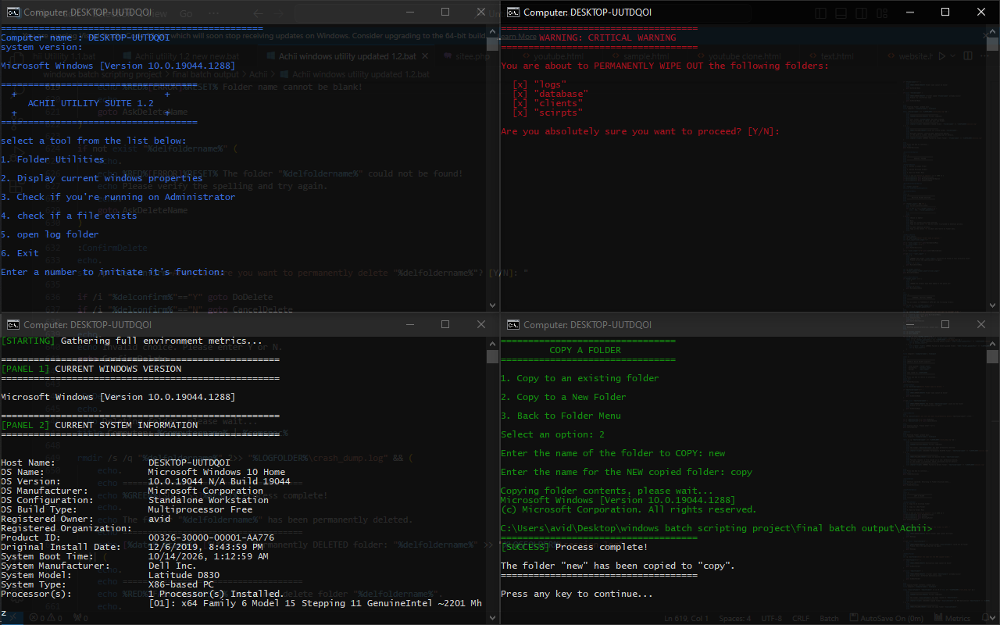
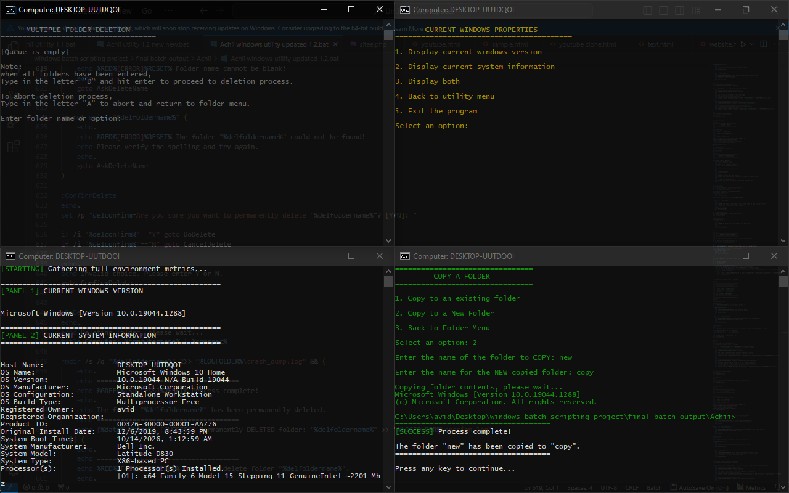

// WINDOWS AUTOMATION • CUSTOM TOOLS • WEB
I build Windows utilities, automation scripts, and troubleshooting tools that save small businesses hours of manual work — without hiring a full IT team.
C:\AchiiWorks> create folder "invoices_2026"
[SUCCESS] Folder "invoices_2026" has been created.
C:\AchiiWorks> _
What I build
Every project starts with one question: what are you actually trying to do? Here's what I can build for you.
Batch and cmd scripts that turn repetitive tasks into one-click tools. Save hours of manual work every week.
Bespoke tools built around how your business actually operates. If a task takes hours, I'll build something that does it in seconds.
Scripts that find, fix, and clean up problems on your Windows machines. Faster PCs, fewer headaches, no IT guy required.
Front-end work in HTML, CSS, and PHP when your project needs a web side. Clean, fast, no bloat.
Featured Project
A Windows utility toolkit I designed and built from scratch — real-time logging, safe error handling, and bulk folder operations.

Beta 1.2 — Actively tested

About Achii Works
I'm Achii — a self-taught developer from Lagos, Nigeria, and the person behind Achii Works.
I started by fixing laptops for friends and family, learning how Windows actually works from the command line up. That curiosity turned into real skills: cmd, batch scripting, and web development. Now I build tools for small businesses that don't want to hire a full IT team just to keep their computers running right.
Every tool I build starts with one question: "What is this person actually trying to do?" That's why my tools are shaped around real workflows, not generic templates.
Lagos, Nigeria
Working globally
Windows automation
Custom utility tools
Web development
Currently Building
A Windows cleanup tool that speeds up slow PCs in one click. No confusing settings, no ads, just results.
Get notified when it launchesWhether it's a Windows automation project, a custom utility, or a web build — I'd love to hear what you're working on.
Usually replies within 24 hours.